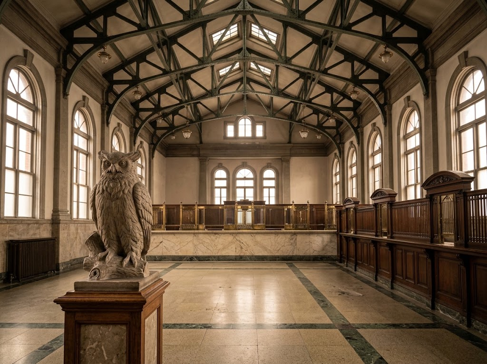
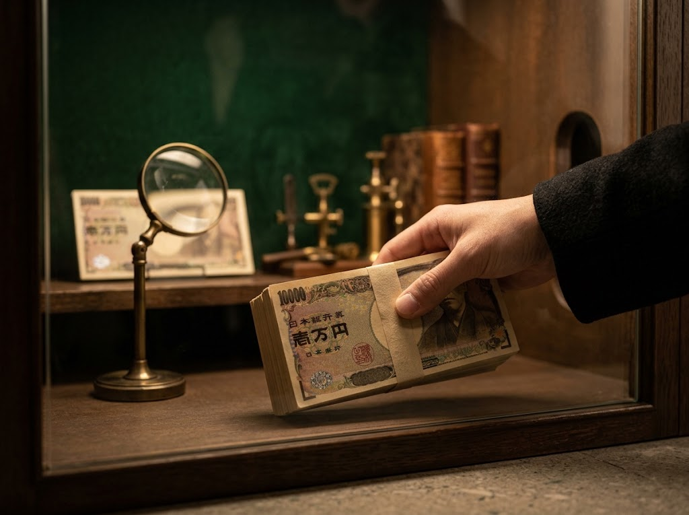

1912年竣工 ・ 入場無料
「北のウォール街」の面影を残す、赤レンガと尖塔の銀行建築。重厚な吹き抜けの営業場で、小樽が金融都市として栄えた時代にふれる。
北海道における金融取引の促進を目的に、1893年、日本銀行の小樽派出所が開設されました。小樽の経済発展とともに役割を広げ、1897年に出張所、1906年には支店へと昇格します。
現在の建物は、東京駅の設計者としても知られる辰野金吾をはじめ、長野宇平治、岡田信一郎らが設計を担当し、1912年7月に竣工。赤レンガ造りの外観の四隅に尖塔を配し、鉄骨構造の小屋組みやモルタルなど、当時の最新技術で建てられました。
2002年に支店業務は札幌支店へ移管されて廃止。2003年からは日本銀行の広報施設「金融資料館」として再利用され、小樽市指定有形文化財にも登録されています。

銀行営業当時そのままの、天井の高い営業場とロビー。岐阜県赤坂産の大理石を使ったカウンターや、シマフクロウ像など、細部まで精緻な意匠が見どころです。

1億円の現金を実際に持ち上げられる参加型の展示。小樽の金融史を分かりやすく紹介する展示とあわせて、見て、触れて学べます。
歴史的価値の高い近代建築であることに加え、展示内容の充実が強みです。金融街として発展した小樽の歴史文化を学べる貴重な拠点として、観光客にも市民にも親しまれています。
2025.6月
無料です。たいして面白くないだろうと期待しないで行ったけど、一億円の実際の重さや、裁断されたお札、新札の細部まで見られるレンズ等があって結構面白かった。館内は冷房が効いているから大勢のインバウンドの人が見ないのに館内で騒いでた。凄くうるさくて迷惑。
小樽といえば運河が有名ですが、金融都市として栄えた歴史を知るなら日銀小樽支店は外せません。建築の美しさも必見で、写真映えもします。入場無料なので気軽に立ち寄れるのも嬉しいポイント。小樽観光をより深く楽しめるスポットです。